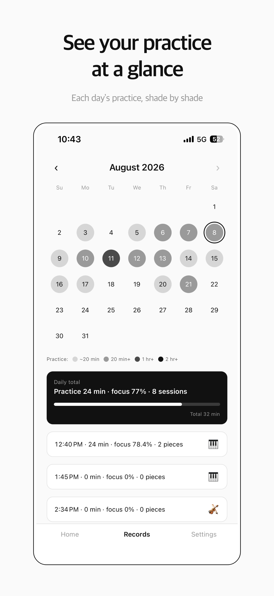

How far ahead should you start preparing?
As early as you can, and with a plan that works backwards from the date. Preparing for an audition has two stages: learning the pieces, and learning to perform them. Most people leave too little time for the second. An example plan for the final three months:
| Time before the audition | Focus |
|---|---|
| 12 to 8 weeks | Finish learning every piece; fix notes, rhythms and fingerings |
| 8 to 4 weeks | Polish sections, start full run-throughs, play for your teacher |
| 4 to 1 weeks | Perform: hall rehearsals, competitions, mock auditions |
| Final week | Nothing new; keep pieces secure and rehearse the day itself |
Adjust the lengths to your own timeline, but keep the order.
How do you practice the performance, not just the pieces?
Perform as often as you can before the real day. Book a hall or a large room and play the full program there. Enter a competition or an evaluation recital if one falls before your audition. Ask your teacher, friends or family to sit as a panel for a mock audition, and play in the clothes and shoes you will wear.
Each of these makes the stage less unfamiliar. Research supports rehearsing the situation itself: in a 2014 study, advanced violinists who played in a simulated audition reported anxiety comparable to a real audition panel, and rated the simulation useful for learning to manage nerves. The study was small, but the lesson is practical — the room should not be new on the day that counts.
What should the last week look like?
Add nothing new. Play your pieces slowly and accurately to keep them secure, do one or two full run-throughs, and rehearse the day: what time you will wake up, what you will eat, how long you need to warm up. Sleep matters more than one extra hour of practice.
What should you do on audition day?
Follow the routine you rehearsed. Arrive early enough to warm up without rushing, keep your warm-up familiar rather than trying anything new, and decide in advance what you will think about in the minute before you walk in.
How can your practice notes help on the day?
They remind you of what is true. Musicians who believe in their own ability tend to report less performance anxiety, and that belief is easier to hold when you can see the work behind it. Before you walk in, look back at your practice notes: the weeks of section work, the passages that finally came together, the run-throughs in the hall.

Remember that the piece you are about to play is one you built yourself, bar by bar. Nobody in the room knows it the way you do. Your performance is yours.
MU:note keeps that record for you — the time you actually played, day by day, on a calendar you can look back on before you go in. If nerves are a worry, read stage fright for musicians, and keep a short practice journal through your preparation.